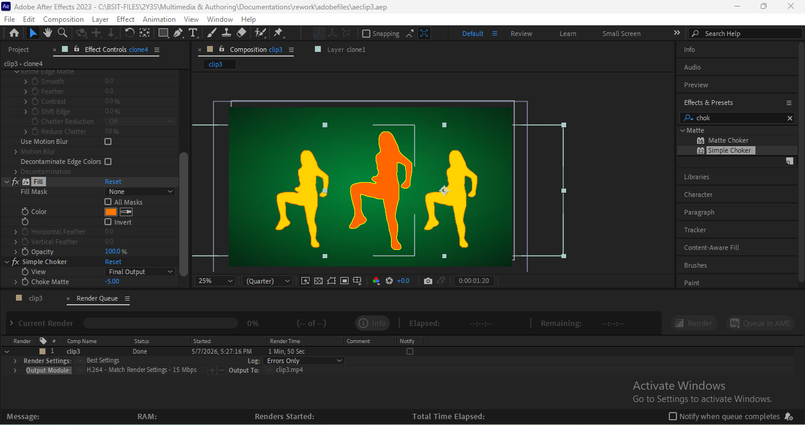
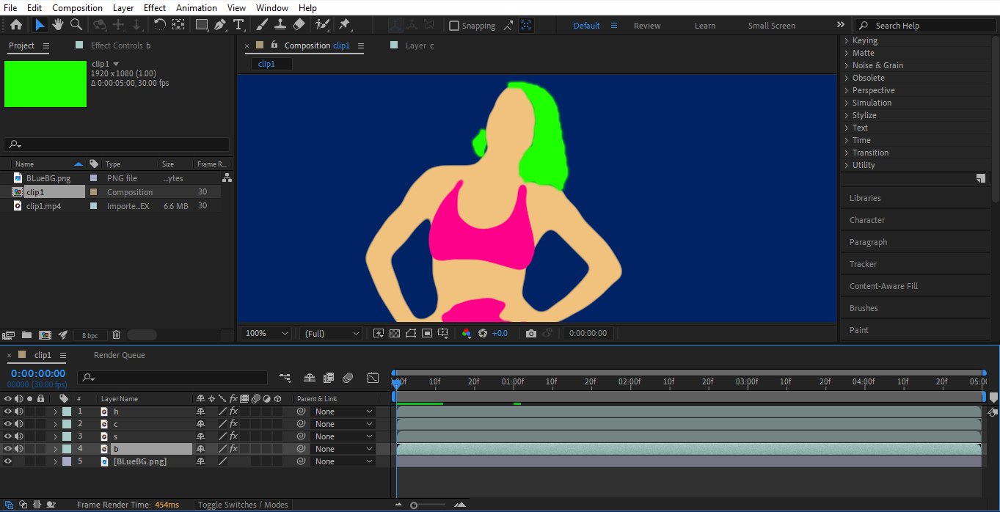

Reel 01
Rotoscope | Final Cut
Frame-by-frame rotoscope animation traced over live footage, finished in After Effects and CapCut.
Step 01–08
How I Did It
The workflow behind the rotoscope project, from source footage to finished cut.

Segmentation
Cut the video into 5 second clips for easier rotoscoping.
Edit
Set up the rotoscope project in your chosen editing tool.
Dissect
Divide the chosen reference into several layers.
Effects
Adjust the effects to enhance the rotoscoped video.
Videos
Use tools like CapCut to put together the finished output.
Lyrics
Put lyrics on the video.
Comparison
Add the original video for comparison.Clip 01–13
Progress Reel
Individual rotoscope clips, tracked from first pass to finished frame.